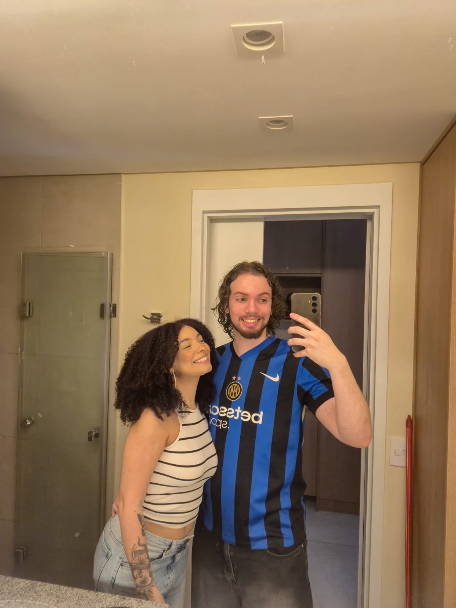

Para Karen Ferreira Bispo dos Santos
Eu sei que atualmente não estamos em um momento bom da nossa relação, mas gostaria de tentar descrever o quanto eu gosto de você Karen bispo. O quanto eu te admiro e o quanto eu sou feliz com você, então eu estou fazendo isso como um gesture de carinho, para te mostrar boa parte do que eu sinto por você.
Coisas que me lembram você...
Algo que é muito sua cara são gatinhos fofos, e sinceramente o amor que você tem pela tasha é algo que eu admiro muito em você, então se divirta apertando nesse botão
(Aperte o botão abaixo)
A música diz tudo
Como nem só de palavras vive o homem, gostaria de separar algumas músicas que me lembram de você.
Alguns dos nossos momentos
Sem duvidas cada foto foi um momento muito bom ao seu lado, que eu guardo com muito mas muito carinho, você me fez e faz tão feliz que eu queria dedicar esse espaço para relembrar um pouco desses momentos.
